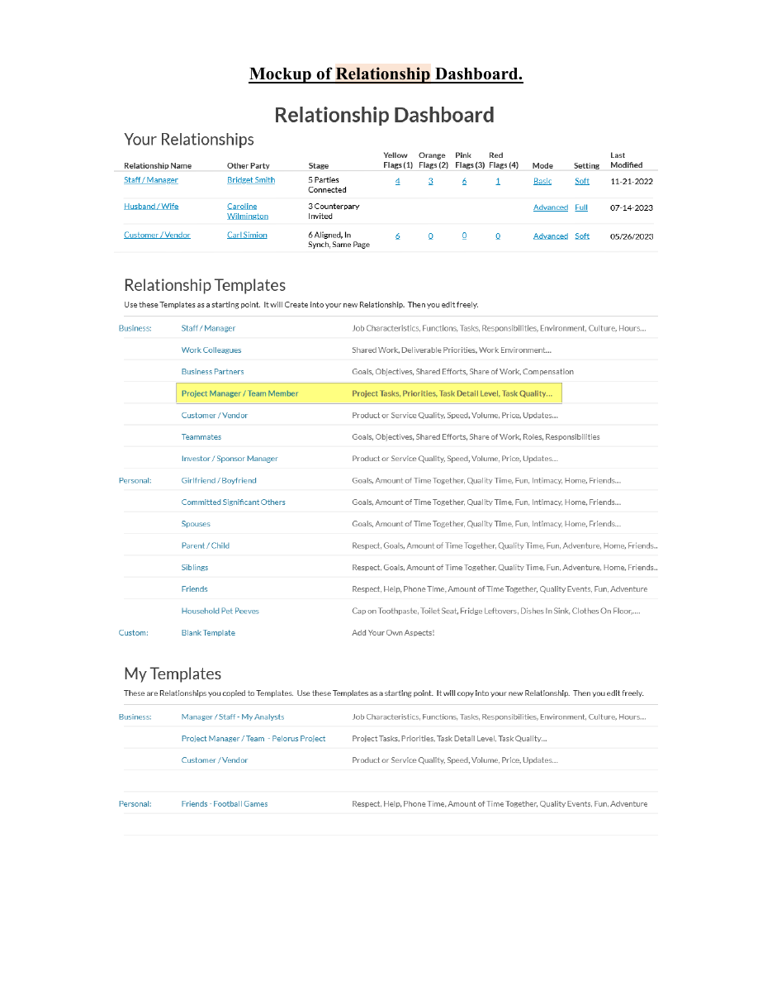
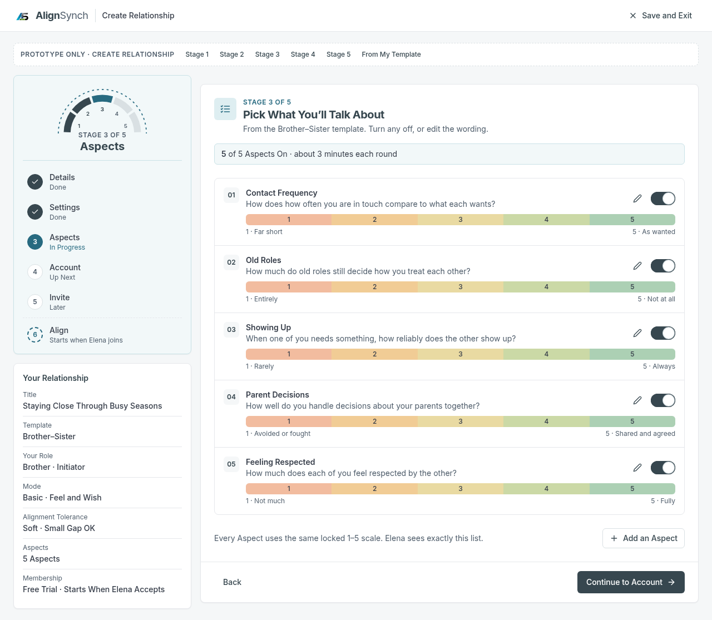

Project Spec 2.0 · Play with Aspects
Pick a template, shape its Aspects, choose a mode, see a worked example. Agreed in 2024 against v2.0 today.
Pick a template, shape its Aspects, choose a mode, see a worked example.
Confidential: this page draws on the 2024 Consulting Agreement, which is under NDA (Exhibit C). It stays local and off the public preview. Fees are not reproduced; see Exhibit B.
Agreed
| ID | Page | Agreed in 2024 |
|---|---|---|
| APP-01 | p14, p32, p81 | “over a dozen pre-populated starting Templates … you can see them free” |
| APP-02 | p104, p142 | “Demo Relationship is a Relationship that has the Counterparty, Coach, and Opinions all populated” |
| APP-03 | p93, p99, p141 | “play with Relationship Templates, one at a time … without registration” |
| APP-04 | p32 | “52 Girlfriend / Boyfriend · 53 Committed Significant Others” |
| APP-05 | p32 | “57 Household Pet Peeves” |
| APP-06 | p17, p32 | “Blank Template – Add Your Own Aspects!” |
| APP-07 | p111–p114 | “Relationship Maintenance … Initiator Role … Counterparty Role … Realm … Descriptor” |
| APP-08 | p15, p116, p119–p120, p128 | “Aspects are user-editable … Values are user-editable … rows can be dragged up and down” |
| APP-09 | p4, p14 | “record their Opinions regarding a dozen Aspects” |
| APP-10 | p38, p112 | “Relationship Mode (2 or 4 Opinions) … Relationship Setting (Small Gap 1 OK?)” |
| APP-11 | p37, p111+ | “Each instance will provide hover text definition” |

Exhibit D p17 · Relationship Dashboard mockup with the template list
v2.0 Today

Public template catalogue · Bundle 02

Stage 3 · Aspects · Bundle 01
| ID | What v2.0 does |
|---|---|
| APP-01 | 27 offered templates (2024 list: 16) across Office, Business, Home, Social, School, Medical and Property realms, each with who it’s for and who it’s not for. |
| APP-02 | /relationship-templates/<slug>/demo: a finished report answered by “You” and “Them”, labelled Example. |
| APP-03 | Stages 1–3 (Details, Settings, Aspects) work signed out and the draft is carried through sign-up. Answering moved to Stage 6, after the invite, so both people answer sealed. This replaces the 30-minute timeout and the “you will lose your changes” pop-up. |
| APP-04 | Kept as records, not offered: “dating is outside this product, by the owner’s instruction.” |
| APP-05 | Not in the catalogue. Doctor / Patient (08) is covered by Patient–Caregiver. |
| APP-06 | My Templates › Start Blank. |
| APP-07 | Stage 1 · Details. Roles and realm live on the template record. |
| APP-08 | Stage 3 · Aspects with the Aspect drawer; a drag-drop reorder is a save. |
| APP-09 | Offered templates carry 5–7 Aspects; the Initiator can add more. My Templates caps at 8. |
| APP-10 | Stage 2 · Settings. Advanced Mode is offered on paid plans only. |
| APP-11 | Help lines under fields (for example Description, Mode). No glossary tooltip on every term. |
Status
| ID | Requirement | Status | Acceptance (MVP) |
|---|---|---|---|
| APP-01 | A public catalogue of business and personal Relationship Templates, viewable before sign-up. | ★ Over-Delivered | /relationship-templates lists at least 13 offered templates signed out, each opening a template page. |
| APP-02 | A fully answered, read-only demo relationship anyone can open. | ✓ Delivered | Each template page links to a finished example report that needs no account. |
| APP-03 | A visitor can shape a relationship before registering without losing the work. | ⇄ Offset | Stages 1–3 work signed out; after sign-up the same draft continues at Stage 4. |
| APP-04 | Offer the dating templates. | ⊘ Out of Scope | n/a: removed. |
| APP-05 | Offer a Household Pet Peeves template. | ◌ Tentative | Template appears in the catalogue with at least 5 Aspects. |
| APP-06 | A blank template to start from scratch. | ✓ Delivered | My Templates offers Start Blank. |
| APP-07 | The Initiator names the relationship and both people; roles and realm come with the template; a description is optional. | ✓ Delivered | Stage 1 saves title, both first names, invite email and optional description; the relationship shows them everywhere. |
| APP-08 | The Initiator can edit, add, delete and reorder Aspects and their Left and Right Values before inviting. | ✓ Delivered | Stage 3 edits, adds, deletes and drag-reorders Aspects; the order is saved. |
| APP-09 | Each template carries about a dozen Aspects. | ◐ Partial | Each offered template has ≥ 12 Aspects, or the Initiator can add up to 12. |
| APP-10 | Per relationship, the Initiator picks Basic or Advanced Mode and Soft or Full Setting. | ✓ Delivered | Stage 2 saves both; Align scores with the chosen Setting. |
| APP-11 | Key terms carry a short help definition where they appear. | ◐ Partial | Every field in the wizard and answer screen has a help line or tooltip. |
★ Over-Delivered: APP-01: 27 offered templates (2024 list: 16) across Office, Business, Home, Social, School, Medical and Property realms, each with who it’s for and who it’s not for.
◐/◌ Gap or Tentative: APP-05. APP-09 (Fair gap. Shorter sets finish in one sitting, but that’s a design view, not a contract offset.). APP-11.
Evidence
- APP-01 ·
app/(marketing)/relationship-templates/page.tsx:21;data/relationship-types.ts:145; guides/initiator/pick-a-template.md · Docs: Pick A Template - APP-02 ·
app/(marketing)/relationship-templates/[slug]/demo/page.tsx:2 - APP-03 ·
lib/auth/demo-form.ts:21;app/(mainlayout)/assessment/new/aspects/route.ts:77; guides/initiator/set-up-details-settings-and-aspects.md · Docs: Set Up Details Settings And Aspects - APP-04 ·
data/relationship-types.ts:1398 - APP-05 ·
data/relationship-types.ts:740 - APP-06 ·
data/pages/dashboard-templates.ts:203; guides/initiator/my-templates.md · Docs: My Templates - APP-07 ·
data/pages/assessment-create.ts:532;data/relationship-types.ts:148; reference/stages/stage-1-details.md · Docs: Stage 1 Details - APP-08 ·
app/(mainlayout)/assessment/new/aspects/route.ts:5; reference/stages/stage-3-aspects.md · Docs: Stage 3 Aspects - APP-09 ·
lib/flow/template-draft.ts:34 - APP-10 ·
content/assessment.ts:93;lib/db/rows.ts:80;lib/billing/entitlements.ts:105; reference/stages/stage-2-settings.md · Docs: Stage 2 Settings - APP-11 ·
data/pages/assessment-create.ts:553
Status words: ✓ Delivered · ★ Over-Delivered · ◐ Partial · ⇄ Offset (replaced; see the row) · ◌ Tentative (not built, deferred or awaiting a decision) · ⊘ Out of Scope (removed, with a citation). Code citations are file:line on main @ 601ce26.